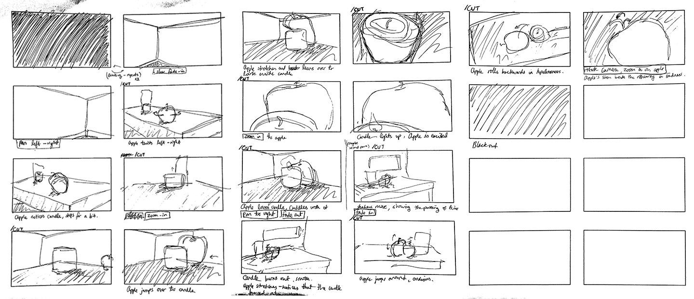

Love At First Sight
2018
I took Introduction to Animating in Three Dimensions class in the fall semester with Professor Jon Navy. Love At First Sight is a short animation I created for the midterm. There are no sounds in this video. Enjoy!
PROCESS
The main objective of this animation was to focus on showing a change of emotional states in a character. After brainstorming the base storyline, I began to flesh it out with a storyboard and an animatic.
Below are some experimentation with the opening scene after receiving class feedback that it was difficult to get settled in the beginning from the first draft of the animation.
As it was my first encounter with the software, I learned a lot, and I loved discovering the capabilities of Maya.
Autodesk Maya and Adobe After Effects were used to create this project.